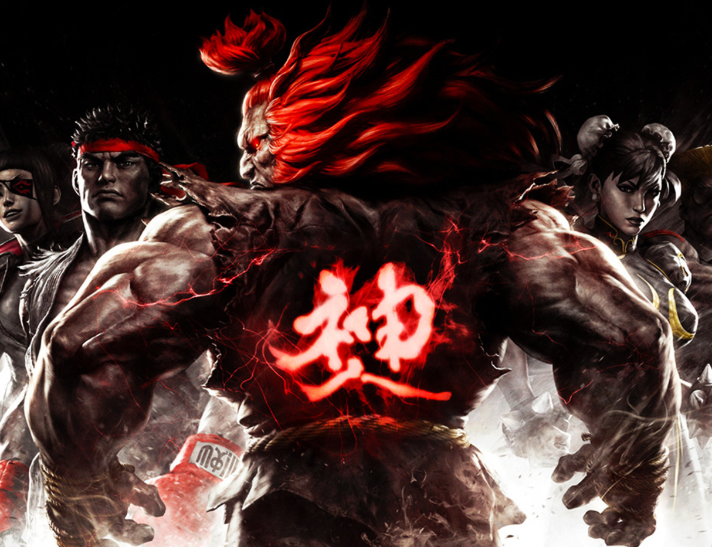
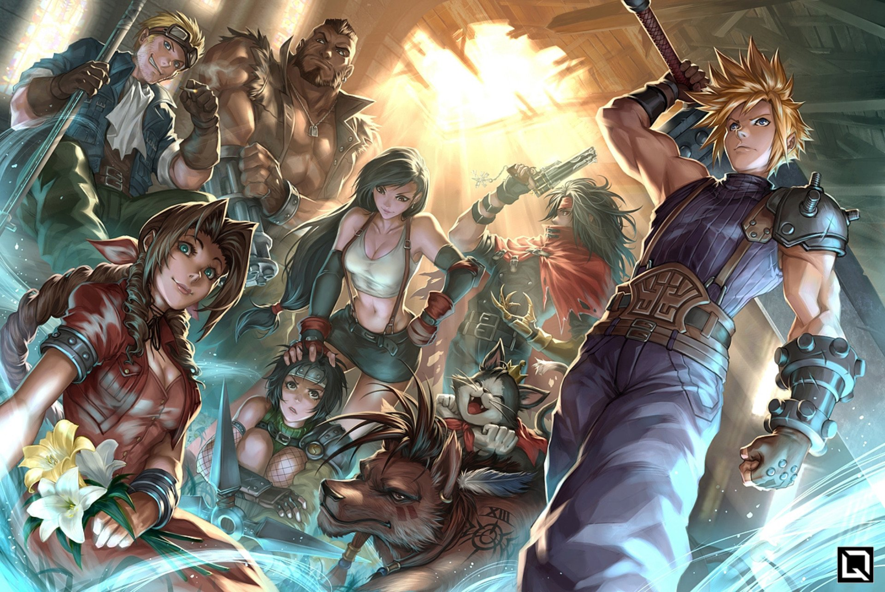
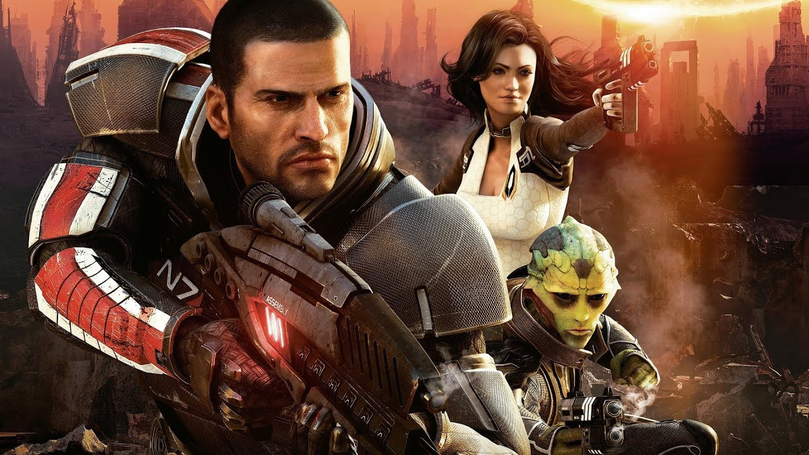
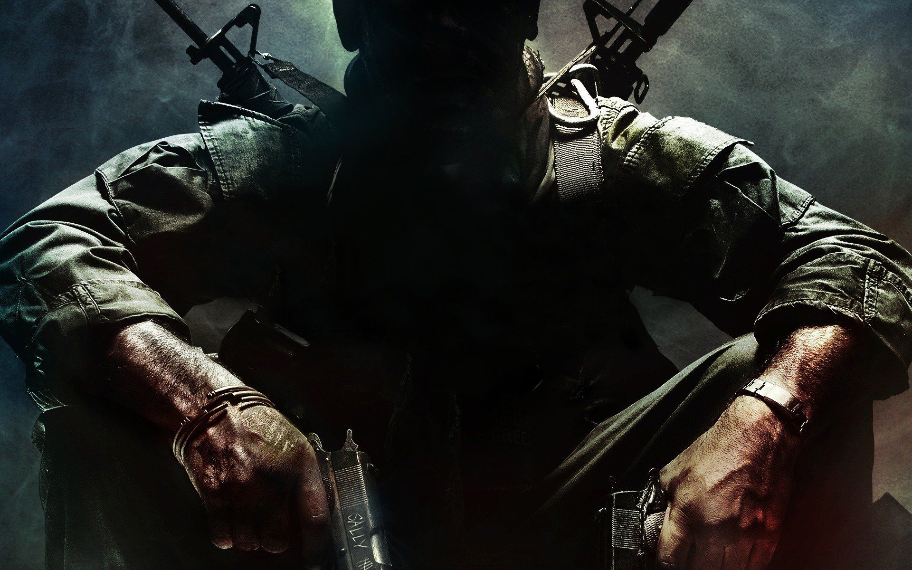
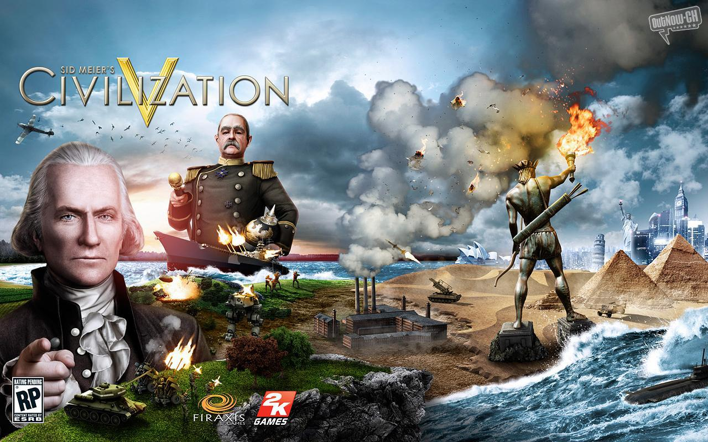
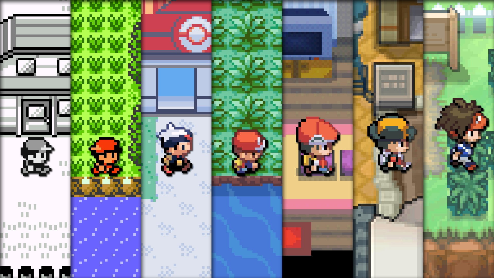
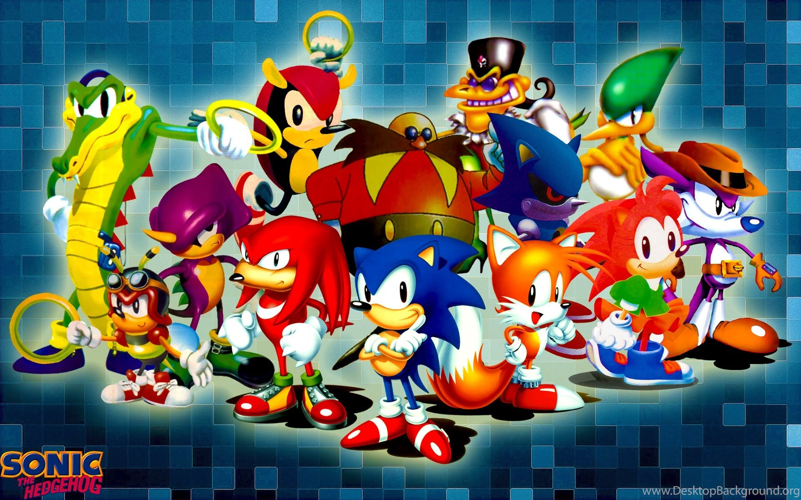
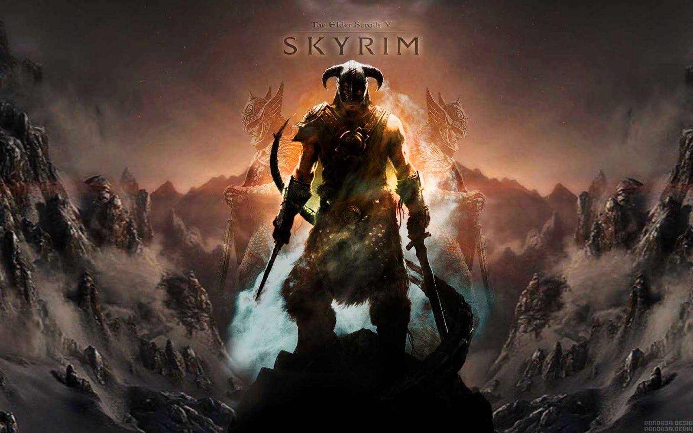

Introduction
Gaming can take on different forms, from starting with the atari, sega saturn, to the new xbox one and ps4. However some games are timeless and no matter what decade are always adictive and hard to put down. This webpage will count down the ten greatest all time games. You can click on the game to learn about them further:
Street Figher
Street Fighter has been a staple for almost all console alike. Starting in 1987, the original Street Fighter was released, which was followed by five other main sereies games, and various spin-offs and crossovers. Bar the visuals the game core hasnt changed much; you pick your player from a select roster and try to defeat your opponest before your health bar runs out.There are e-sports tournamets that are held every year to determine the top gamer, with the winner takeing away up to $1 million.
Fun Trivia
- Street Fighter Introducted the worlds first female character, Chun Li. She has become a main stay for the franchise and appeared in a few of the tournament finals!
- The Indian Yogi, Dhalsim is actually inspired by a 1976 movie character. In the Master of the Flying Guillotine there is also an Indian Yogi, which can stretch his arms extraordinarilly long.
- Street Fighter The Movie was a movie released 1994 based on the popular games of the same name. The film starred Jean-Claude Van Damme as Guile and loosley followed the plot of Street Fighter II, achieveing commercial success.
As the series has gone on, more and more common characters were introduced to the franchise, such as: Guile, Zangief, Akuma Blanka, Dhalsim... These characters have their own play styles and specials that have strengths and weakenesses. It is this that makes the franchise so poppular- trying to discern the opponets strengthis and thinking of strategies to beat them. Fighting platforemers are known for their long combo moves and this game is no different! With some moves requiring the player to button mash up to twenty buttons in a row.
Final Fantasy
Finaly Fantasy, of course had to take a spot on the top ten list. The game helped define rpg's to this day and pioneered the turn style fighting format. With dramatic stories and over the top characers Final Fantasy has everything! The franchise has explored many avenues, including mmo's (massive multiplayer online games). These games are played online where players tend to level up through quests given and gain items through raids and loots. Upon its inception Final Fantasy onliNe received very negative review. However the franchise brough it back, with making a realm reborn expansion, which set a precedence for mmo's
Fun Trivia
- The lead programmer of Final Fantasy, Nasir Gebelli, was also involved in many groundbreaking first person shooter games at the time; in a sense Final Fantasy is linked to the start of First person Shooter Games.
- Final Fantasy was, in a sense, Square Enix's last ditch shot at staying in the gamemaking realm. After a number of flops the directors were losing a lot of money, but Sakaguchi convinced them that the game would be a success.That is where the monkier Final in Final Fantasy comes from.
- The first Final Fantasy was produed by a team of only 7 people! In comparison 120 people were needed to make Final Fantasy VII, and 300 were needed for XI.
The most recent Final Fantasy game is the remake of Final Fantasy VII. This game follows Cloud Strife in an open world remade in stunning high defenition design. Aided with friends along the way you join together to tackle the sinister Shinra Electric Power Company. Many have stated this to be the best Final Fantasy yet, with it receiving ten out of ten. Overall beautiful design, gripping story and all round action make this a top ten contender.
World Of Warcraft

The game that defined the MMO genre. World Of Warcraft is a name known to any gamer alike. From large open worlds, to many different pvp option, to group dungeion raids, World Of Warcradt gives players so much choice and freedom on what they wish to do. Players can pick from 13 playable races each with their own affiliations (Pandarian classed as neutral), where players chose from two global groups, The Hoard, or The Alliance! This allows players to interact with other friendly races and battle foes. WOW can be seen as the trend setter for a lot of the looting and raiding rpg games.
Fun Trivia
- At its peak, World Of Warcraft had more than 12 million active players. Thats higher than the poppulation of Belgium(11million aprox)!
- World of Warcraft was adapted into a movie in 2016. Feature the two main races of Orcs and Human, Warcrafts main plot is with the harmony of the two races.
- The size of Azeroth if it were a real country would be a staggering 80 square miles, which is exactly the size of the town El Reno, in Oklahoma.
The game was released in 2004, become one of the longest staying and succesfull games to date. Most games have a shelf life, however through seven expansions World Of Warcraft has only added to their success. These Expansions have slowly added to the roster of characters, creaded improvements and modernised mechanics to ensure they stay adead in the market. There recent srge in MMO's in the last decade has led to certian speculations of the game, such as the overall graphic fideliy of the game, with games like Final Fantasy online producing such stunning visuals, and mundane quests still in the game. However the loyalty of WOW's fanbase has ensured it's survival for years to come.
Mass Effect
Mass Effect is another role playing game that carved its own place in gaming history. There have been 3 main titles in the genre, starting on Xbox 360, with the original Mass Effect. It wasnt until Mass Effect 2's release that the franchise was catupaultied to major success. The second title in the genre introduced better combat mechanics and many other choosable characters. In Mass Effect you play as captain John Shepard, who capains a spaceship with aims to stop the elusive 'reapers'. Mass Effect is known for its increadible story that is be altered and affected by the character decisions.
Fun Trivia
- Mass Effect's idea came when Bioware was producine Star Wars, Knights Of The Old Republic, a game that LucasArts approach Bioware for.
- The games namesake is from the special Mass Effect fields that allow players to travel across galaxies.
- Many of the decisions of subsequent sequels were made form fans inputs and responses made about the original game.
Players can make different decisions in quests what will affect the outcome in game. There are two main types of decisions, Parageon, which is ultimatelly 'good', and renegade, which is inhrently 'bad'. Many other games have tried to pull of this feat but noe have succeeded in the way Mass Effect has, whild allowing players to explor a large map, interact with hundreds of NPC's and try out various guns. Players also have different classes they can choose with different powers included. All these reasons, to name a few has got Mass Effect on the top ten list.
Call Of Duty: Black Ops
One of the biggest franchises to date, Call Of Duty is in at number 6. Call Of Duty is a First Person Shooter, that started out in 2003.There main focus was on world war 2 , however moving on the series different time periods have been the main inspiration. Players are able top pick select guns from these time periods to fight against eachother and the computer. Actvision generally release a new game in the franchise every years, allowing for an update and refresh on weapons, missions and graphics.
Fun Trivia
- There are a total of 16 games in the Call Of Duty franchise. Thats almost one new game a year. The Developers are known for how quick they can produce new and consistently good games every year.
- The latest game to the genre, Modern Warfare add a new mode style, Battle Royale where up to 120 players can compete on a sinle map.
- The highest grossing franchise of the game is Call Of duty Black Ops, selling a staggering 30.99 million units, with CoD Modern Warface close on its tail at 30.97 million.
The game attracts players with the entertainment of beating friends and people online, with level progression a key aspect in getting the best guns and mods. There are many tournamets held internationally for the top COD gamer, where the chances of success can depent on a point second of a button touch. The constact development and 'I cant put it down' factor has semented this game in the top ten.
Sid Meiers Civilization
One of the largest stategy games in the genre, Civilization gives players the ability to build an empire from scratch, to a large all encompassing dominant force. A standout game, no other game lets players create large cultural cities, whilst learing about the real historical relics of the past. Players choose from an array of cultural figues, such as Elizabeth of England, and make choices from the get go to dominate rival groups. You can win in several ways, such as domination vicory (taking everyones capital), or technological victory (by reaching Alpha Centauri).
Fun Trivia
- The game is named after one of the creaters of the game, Sid Meier, for which advertieser belived at the time would attract more people to buy and play the game.
- Civilization VI is the fastest selling game in the series, with the game selling over a million coppies in less than two weeks.
- Overall the Civ games have sold around 37 million copies, putting it about Mortal Combat, which only started a year later, and is just beind Street Figher, which is a more well known brand globally.
There have been six main games in the series, with VI being the current game, however this has been received with mixed reviews, mainly due to the 'questionable' graphics, that can bee seen as worse than Civ V. But the main mechanic is still there with players being able to make their own decision and chosing how they wish to crush their foes!
Pokemon
Any list of most influential game titles in the world could not be complete with Pokemon. Pokemon started out in 1995 with the release of Pokemon Green and Red, then later released Yellow. Pokemon set the trend for other games to follow, becoming a major success after a year of its inception. By making the characters more 'cuddly' and family friendly, they appealed to wider markers, kids and adults alike.The gameplay had a simple concept; you capture the pocket monster, train it and fight gyms to win badges. The similicity of the game mechanics is one of the key factors of its success. Anyone can understand the moves, skills and leveling up system, even adult born before the gameing era!
Fun Trivia
- The most famous pokemon, Pikachu is named after the Japanese onomatopoea for squeaking and shimmering
- As of 2020 there are a total of 807 pokemon, with the latest generation being the seventh generation. There is also a new DLC being relseased that will increase this number.
- Herman Cain, a republican candidate was found to have quoted Pokemon 2000 lyrics in a speed being "Life can be a challenge. Life can seem impossible. Its never easy when theres so much on the line. But you and I can make a difference. Theres a mission just for you and me."
The large success that Pokemon has has can be attributed to the vast media it has targeted: the playing cards it released, the anime that has ran for 22 seasons long, and collectables that they have sold. This diversification has led it to being the worlds largest media franchses, with its revenue estimated at $95 billion! In terms of the games the slight move to more 3d visuals has helped players aclimatise to the new technologies available, with the latest in the series being Pokemon Sword and Shiled on the Nintendo Switch.
Super Mario

Another Nintendo staple, and globally known Mario. The first Mario game was released in 1985, named Super Mario Bros on the NES. The game is a side platformer where the player has to run from one end of the map to another, avoiding obstacles in the way. The player plays Mario, the plumber whose mission is to save Princess Peach from the evil Bowser. The sheer creativity and variety in each map allows for endless fun trying to go from start to finish. There have also been many variations of the game, such as Mario creater, where players can create an obstacle course for people to complete. The game can be enjoyed by all ages, which makes it a very accesible game.
Fun Trivia
- There has been a Mario game for every console that nintendo have ever released, from 1985 nes to the latest Nintendo Switch.
- Under his original name , Jumpman, in the Donkey Kong game Mario was the villan as he mistreated his pet, Donkey Kong, causing the ape to kidnap his girlfriend
- Although Mario was meant to be a plumber in other games he has been a: carpenter, a medical physician, an archaeologist, champion kart racer, golfing aficionado and even the tycoon of a successful toy manufacturing company.
The constant change and adaptability to new consoles has allowed this cherised franchise to flourish through the years, with creativity of the different games which means theres a game for everone. One of the most competitive of the games is Mario Kart, where players drive diferent vehicles to get to the finishing ling. There are Tournaments held in Japan for the best Karters around, with prestigous prize money. The beauty of the game is how relexed but fun it can be; whilst other games you have to grind and take it serious, Mario lets you relax and not sweat the small stuff, which is why it has to have a spot in the top 5.
Sonic
Another media king, Sonic The Hedgehod has been a major symbol for gaming since 1991. The inception of Sonic came when Sega bosses were looking to compete with the media giant Mario from Nintendo. There have been many vaiations of the game, but like Mario you generally need to go from one side of the map to the other. Sonic is meant to be an anthropomorphic blue hedgehog who battles the evil Doctor Eggman, a mad scientist. He is able to curl up into a ball to roll around the map, making for more interesting gameplay than simple running around.
Fun Trivia
- Programmer Yuji Naka’s started small. His prototype for the game featured a simple character rolling through a long tube while inside a life-sized ball. He used this version of the game to create the algorithm that would make Sonic’s complex motion scheme possible.
- At the time of Sonic’s release, the hero was the fastest-moving video game character ever created. In 2001, Sonic programmer Yuji Naka told Edge magazine, “Sonic was delivering high speed no other game was capable of".
- There have been over 70 million Sonic the Hedgehog games sold globally.
Sonic hit its rennaisance where the Sega team made Sonic The Hedgehog in 1998 for Dreamcast. The game was made in true 3d a feat very new in the space. This allowed you to control Sonic and other characters in a open world, where you took part in missions, whilst also going on the traditional Sonic runs that was synonimous with the game. Sonic also addapted to different types of games through the years, such as Sonic racing, however the separating factor between Sonic and Mario, were that Sonic had more of a detailed story, which immersed the players in a plot that made them wanting to play on to fully understand.
Elder Scrolls: Skyrim
Here it finally is the number one spot. There have been many record breaking games in the list, but none immerses the gamer in a more real and breathtaking way than Elder Scrolls Skyrim. Released in November 2011 Skyrim was the fifth main installment in the Elder Scrolls line. The game puts the player in a viking/saxon-esque time where they are the Dragonborn, with the quest to defeat the dragon Alduin the World-Eater. Although this is the main plot many players lose trach of this, through the thousands of quests available to them, where they can choose their fate and loalties to differend holds (provinces). The size and beauty of Skyrim takes anyone aback, where you can spend hours just walking around, aimlessly looking for random spots. Coupled with this Dragons can randomly appear at any time, so you have to keep on guard.
Fun Trivia
- It is often believed that Skyrim’s map is the biggest one ever found in a The Elder Scrolls game – however, when it comes to sheer size, the Daggerfall from 1996 wins easily. The map from Daggerfall is a whomping 4000 times the size of Skyrim!
- The voice of Paarthurnax, one of the dragons in Skyrim was voiced by Charles Martinet, who also voiced Mario in the Super Mario games.
- There were more than 70 actors employed to cover the 60 000 lines of dialogue in Skyrim. Big names on the Skyrim cast included Max Von Snydow, who voice acted characters in The Exorcist and Star Wars: The Force Awakens
The Character progresson in Skyrim allows you to pick perks in different areas, such as destruction maging, or blocking. The diversity of these perks means players arents stuck in the archaetypal mage or swordsman and can forge personal characters. With the endless possibilites of Skytim it comes at no supprise the community regularly make mods for the game, such as new weapons, followers and areas. Skyrim is one of the most modded game, with there being over 41,000 mods on Nexus Mods. People have become so immersed in the game that they want to just build upon the game; it has been almost ten years but interest in the game hasnt waned. The game has allowed the players to build a community where they can share their mods, experiences and plays styles, even though it is not multiplayer. This is why it deserves to take the top spot at number one.